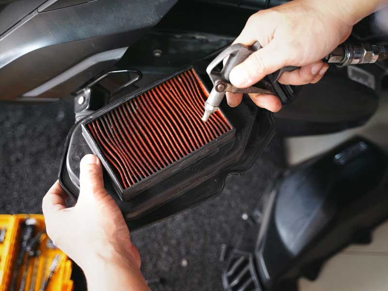

การเปลี่ยนกรองอากาศ
เมื่อใดที่ควรรู้ว่าถึงเวลาเปลี่ยนกรองอากาศ?
ระยะทาง:
ควรเปลี่ยนทุกๆ 10,000 - 20,000 กิโลเมตร
สภาพแวดล้อม:
ถ้าขับขี่ในพื้นที่ที่มีฝุ่นเยอะ เช่น ทางลูกรัง หรือเขตก่อสร้าง อาจต้องเปลี่ยนเร็วกว่าที่กำหนด
อาการเครื่องยนต์:
หากเครื่องยนต์กำลังตก บิดแล้วไม่ตอบสนอง สั่นผิดปกติ หรือมีควันดำออกมา แสดงว่ากรองอากาศอาจอุดตัน
ประเภทของกรองอากาศ
กรองแบบกระดาษ (แบบแห้ง):
เป็นชนิดที่พบมากที่สุดในรถทั่วไป ไม่สามารถทำความสะอาดได้ ต้องเปลี่ยนใหม่ทุกๆ 3 เดือน
หรือตามระยะทางที่กำหนด
กรองแบบผ้าหรือสแตนเลส:
สามารถนำมาทำความสะอาดและใช้ซ้ำได้ เหมาะสำหรับผู้ที่ต้องการลดค่าใช้จ่ายในการบำรุงรักษา
วิธีการเปลี่ยนกรองอากาศมอเตอร์ไซค์
1. เตรียมตัว:
หาตำแหน่งกล่องกรองอากาศ โดยทั่วไปจะอยู่ใต้เบาะรถ
2. ถอดกรองเก่า:
เปิดฝาครอบกรองอากาศออก แล้วดึงกรองอากาศอันเก่าออกมา
3. ทำความสะอาด (กรองแบบผ้า/สแตนเลสเท่านั้น):
หากเป็นกรองชนิดนี้ ให้ล้างด้วยน้ำยาล้างจานหรือน้ำยาเฉพาะ ล้างน้ำสะอาดให้หมดจด แล้วตากแดดให้แห้งสนิท
4. ติดตั้งกรองใหม่:
ใส่กรองอากาศอันใหม่เข้าไปแทนที่
5. ปิดฝาครอบ:
ขันน็อตต่างๆ กลับเข้าที่เดิม เพื่อให้ฝาครอบกรองอากาศแน่นหนา